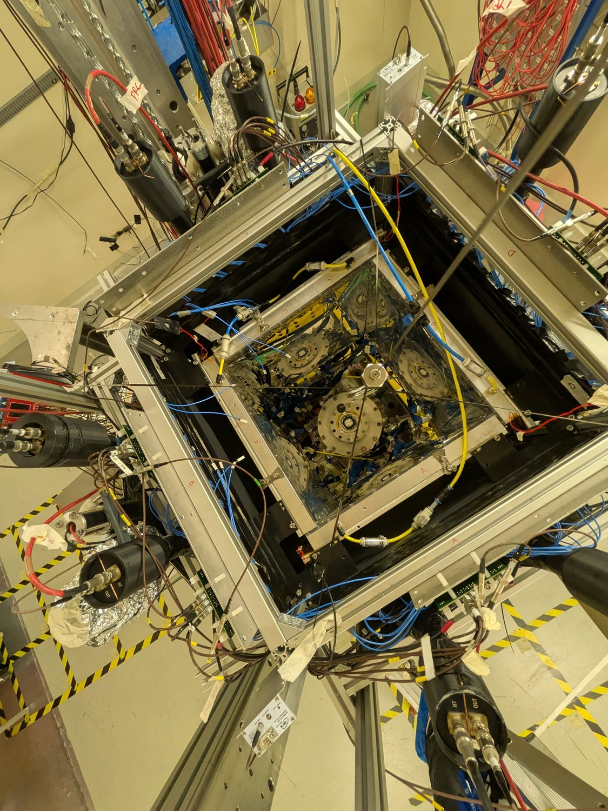

MX17: a low-mass resistive Micromegas TPC
to track e+e− pairs in X17 searches
1 CEA Saclay, Irfu · INFN / n_TOF co-author affiliations to be added
CEA Irfu logo
n_TOF / CERN logo
INFN logo
1An X17 search is an opening-angle measurement
 scintillators (trigger, energy)
TPC readout plane
30 mm drift gap
beam
target
e+
e−
near arms drawn as outlines
scintillators (trigger, energy)
TPC readout plane
30 mm drift gap
beam
target
e+
e−
near arms drawn as outlines
A generalised search: a target in a beam, four TPCs 20 cm away closing a box around it, scintillators
behind. Each lepton leaves a short 3D track segment in the gas of one chamber. Idealised layout, drawn to scale.
2What the tracker must do
- X17 would appear as an excess of e+e− pairs at large opening angle, on a falling internal-pair-creation continuum.
- The leptons carry a few MeV: they scatter in everything. The tracker has to be almost nothing before the measurement is made.
- One chamber sees a short segment far from the target, so the quantity that matters is the track angle, not the position.

A 1° chamber is already below the scattering in the air and window in front of it for leptons
under about 12 MeV: a better angle would not be seen.
3The chamber: one gas gap, one board, a 3D segment

Layer stack, exploded along the drift axis, with a track and its drifting ionisation
(in-plane dimensions real, thicknesses exaggerated).

A 16-pad patch of the readout board from the gerbers: mesh, resistive strips, the pad
plane, and the vias that take alternate pads to the X strips (orange) and the Y strips (green).
40×36
cm² active area
30 mm
drift gap, Ar/iC4H10 95/5
0.78 mm
pitch, 512 + 512 strips
2.4×10−4
X0 of gas along the gap
- Bulk Micromegas with resistive strips: spark-tolerant at the gain a 0.78 mm strip needs.
- One plane of pads, shared between two strip views through vias: X and Y see the same avalanche and carry equal charge.
- The drift time gives the third coordinate (µTPC): a 3D segment from a single thin chamber.
- DREAM front end, full waveforms kept.
4Fit the picture, not the hits
Each view is a strip × time image. The reconstruction fits a forward model of that whole image: a straight track, drift and diffusion, charge sharing on the resistive layer, the electronics response.

One cosmic muon, both views: the recorded waveforms (left) and the model at the fitted track (right).
5Performance on cosmic muons and in the SPS beam

Fitted against reference angle, one chamber: flat over ±20°.
1.0° / 0.9°
angle, X / Y view, single chamber
94.8 %
single tracks, full active area
~120 µm
intrinsic position resolution
40 ns
event time
97.7 %
two particles paired correctly (equal X/Y charge)
95.6 %
second particle in the chamber, separate in both views

Two tracks in one chamber, against their separation in the closer view.
6First use: n_TOF EAR2, summer 2026


Four chambers around a 3He capsule in the EAR2 neutron beam (left, seen along the beam).
Track segments extrapolated back to the beam axis image the capsule: three chambers agree on its height
to a few mm.
7Beyond n_TOF
- The chamber is a module: any target, any beam, any number of arms.
- Next: (INFN LNL / upgrade plans, to be written with Dylan).
- Open to ideas: lighter windows, a low-pressure or He-based gas, a faster front end.
QR
3D event display
3D event display
QR
3D readout board
3D readout board
Details: two papers in preparation (the detector; the reconstruction).
Contact: e-mail
Contact: e-mail
MOCK-UP v0 · 2026-11-18 · numbers from the Paper I draft, to be reconciled before printing